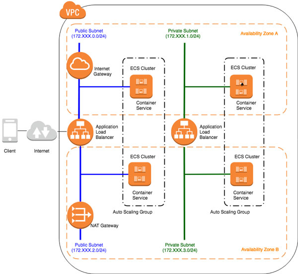
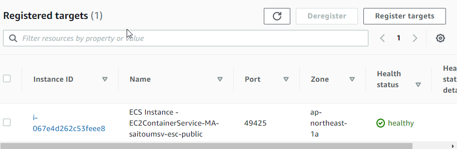

以下の構成でAWS環境を用意する。

| サービス名 | 説明 |
|---|---|
| VPC |
|
| NATインスタンス |
|
| ALB |
|
以下2つのプロジェクトをSTSに作成する。
| プロジェクト名 | 説明 |
|---|---|
| backend | バックエンドで稼働するアプリケーションのプロジェクト。SpringBoot on Dockerでプライベートサブネット上に起動する。 |
| bff | フロントで稼働するアプリケーションのプロジェクト。SpringBoot on Dockerでパブリックサブネット上に起動する。 |
手順は以下の通り。
mvn spring-boot:runを実行し、ビルドが成功することを確認する。STS上にプロジェクト作成後、GitHubにコミットする。
git init
echo "# Study CloudNative Webapp" >> README.md
git add .
git commit -m "first commit"
git remote add origin git@github.com:yushin1402/aws-cloudnative-webapp.git
git push -u origin master
「/api/v1/users」でリクエストを受け付け、ユーザのリストを返却するアプリケーションを実装する。
| パッケージ名 | 説明 |
|---|---|
| com.example.backend.app.model | Modelクラスを配置する。 |
| com.example.backend.app.web | Controllerクラスを配置する。 |
| com.example.backend.config | アプリケーション設定を定義したクラスを配置する。 |
package com.example.backend.app.model;
import lombok.AllArgsConstructor;
import lombok.Builder;
import lombok.Data;
import lombok.NoArgsConstructor;
@AllArgsConstructor
@NoArgsConstructor
@Builder
@Data
public class User {
private String userId;
private String userName;
}
| ポイント | 説明 |
|---|---|
@AllArgsConstructor |
全てのプロパティ(userIdとuserName
を引数にしたコンストラクタを自動生成する。
|
@NoArgsConstructor |
引数なしのコンストラクタを自動生成する。 |
@Builder |
Builderクラスを自動生成する。Builderを利用することで、メソッドチェーンで値を設定できる。
この後実装するContoroller側での呼び出し方を見るとイメージがつく。 |
@Data |
getterやsetterなどを自動生成する。 |
package com.example.backend.app.web;
import java.util.ArrayList;
import java.util.List;
import org.springframework.web.bind.annotation.GetMapping;
import org.springframework.web.bind.annotation.RequestMapping;
import org.springframework.web.bind.annotation.RestController;
import com.example.backend.app.model.User;
@RestController
@RequestMapping("/api/v1")
public class BackendRestController {
@GetMapping("/users")
public List getUsers(){
List users = new ArrayList<>();
users.add(User.builder().userId("1").userName("Taro").build());
users.add(User.builder().userId("2").userName("Jiro").build());
return users;
}
}
| ポイント | 説明 |
|---|---|
@RestController |
RestfulAPIを作成する際に利用するアノテーション。
戻り値をJSONオブジェクトへの変換を行っている。 ( @ControllerとすればViewが返却される。)
|
@RequestMapping("/api/v1") |
メソッドと「/api/v1」URLのマッピング定義をしている。 |
@Builder |
Builderクラスを自動生成する。Builderを利用することで、メソッドチェーンで値を設定できる。
この後実装するContoroller側での呼び出し方を見るとイメージがつく。 |
User.builder() |
Userクラスの@Builderで定義したBuilderメソッドを呼び出している。
Userクラスのプロパティをメソッドチェーンで呼び出し、値を設定している。
|
package com.example.backend.config;
import org.springframework.boot.SpringApplication;
import org.springframework.boot.autoconfigure.SpringBootApplication;
import org.springframework.context.annotation.ComponentScan;
@SpringBootApplication
public class BackendApplication {
public static void main(String[] args) {
SpringApplication.run(BackendApplication.class, args);
}
}
| ポイント | 説明 |
|---|---|
@SpringBootApplication |
SpringBootの起動クラスであることを宣言するアノテーション。
com.example.backend.config配下に@SpringBootApplicationを宣言することで、
コンポーネントスキャンの対象がcom.example.backend.config以下の階層に限定される。従って、com.example.backend.app配下のクラスで Bean定義を行ってもDIコンテナにBean登録されないため注意すること。 デフォルトのプロジェクトではトップパッケージに @SpringBootApplication
が配置されているため、全てのクラスでBean定義が可能だが管理が煩雑になるため、com.example.backend.configに Bean定義を行うクラスをまとめて管理する方針としている。 |
package com.example.backend.config;
import org.springframework.context.annotation.ComponentScan;
import org.springframework.context.annotation.Configuration;
import org.springframework.web.servlet.config.annotation.WebMvcConfigurer;
@Configuration
@ComponentScan("com.example.backend.app.web")
public class MvcConfig implements WebMvcConfigurer {
}
| ポイント | 説明 |
|---|---|
| com.example.backend.configへの配置 | このパッケージに配置することでSpringBoot起動時の起動クラス(BackendApplication)によるコンポーネントスキャン対象となる。 |
@Configuration |
このアノテーションによりConfigurationクラスであることを宣言する。サンプルコードからは読み取りづらいが、
クラス内にインスタンスを返す@Beanを付与したメソッドを定義すると、Bean定義を行うことが出来る。
|
@ComponentScan("com.example.backend.app.web")
|
引数を指定することで特定のパッケージやクラスをDIすることが出来る。com.example.backend.app.webをDIし、SpringBoot起動時にControllerの
@RestContorollerやGetMappingメソッドをDIし、APIの受け口を作成している。
DIされたインスタンスは、WebMvcConfigurerのdefaultメソッドで利用されていると思慮。
|
server:
servlet:
context-path: /backend
index.htmlのボタンを押下し、APIを呼び出すBFFを作成する。
| パッケージ名 | 説明 |
|---|---|
| com.example.backend-for-frontend.app.model | Modelクラスを配置する。 |
| com.example.backend-for-frontend.app.web | Controllerクラスを配置する。 |
| com.example.backend.config | アプリケーション設定を定義したクラスを配置する。 |
package com.example.backendforfrontend.app.web;
import org.springframework.beans.factory.annotation.Autowired;
import org.springframework.stereotype.Controller;
import org.springframework.ui.Model;
import org.springframework.web.bind.annotation.RequestMapping;
import org.springframework.web.bind.annotation.RequestMethod;
import org.springframework.web.client.RestOperations;
import com.example.backendforfrontend.app.model.User;
@Controller
public class BackendForFrontendController {
@Autowired
RestOperations restOperations;
@RequestMapping(method = RequestMethod.GET, value="users")
public String getUsers(Model model) {
String service = "/backend/api/v1/users";
model.addAttribute("users",
restOperations.getForObject(service, User[].class));
return "users";
}
}
| ポイント | 説明 |
|---|---|
RestOperations restOperations |
org.springframework.web.client.RestOperationsでbackendのAPIを呼び出している。 DTOとレスポンスのバインドをよしなにやってくれるため、便利なライブラリとのこと。 上記のソースでは、backendがUserオブジェクトをJSONで返却しているが、このキー値と User.classのプロパティを自動でマッピングし、格納している。
|
@RequestMapping(method = RequestMethod.GET, value = "users")/code> |
BFFの「/users」に対するGETリクエストを受け付けるとこのアノテーションを付与したメソッドが実行される。 なお、先頭の"/"は省略可能ならしい。 |
Model model
|
RequestMappingの引数に設定されたModel modelはレスポンスとしてView(=TymeLeaf)に返却されるので、addAttributeしておくと、View側で返却結果を画面に反映出来る。 return "users"がTymeLeaf側でレスポンスを取得する際のキーとなる。
|
String service = "/backend/api/v1/users";
|
String serviceにbackendのURLを定義しているが、ホスト部はあえて記載していない。実環境ではホスト部はALBのDNS名となり、環境差分である。このため、application.ymlと @ConfigurationPropertyを駆使することで、プレフィックス定義として外だしする。 |
serviceにプロパティを定義する。
service:
dns: http://internal-MA-saitoumsv-private-alb-1666952727.ap-northeast-1.elb.amazonaws.com
package com.example.backendforfrontend.app.web;
import org.springframework.boot.context.properties.ConfigurationProperties;
import org.springframework.stereotype.Component;
@Component
@ConfigurationProperties(prefix="service")
public class ServiceProperties {
private String dns;
}
| ポイント | 説明 |
|---|---|
@Component |
環境差分がある設定はDIコンテナにBean登録することで、変更が用意になる。(今回はapplication.ymlの変更だけで対応可能) |
@ConfigurationProperties(prefix="service") |
このアノテーションを付与したプロパティには引数のprefixが定義される。(prefix以外も定義可能) |
@Dataを付与したServicePropertiesをDIし、dnsの値をRestOperationに渡し、rootUriにdnsの値を格納してRestOperationsをServicePropertisにまとめて管理することができる。
package com.example.backendforfrontend.config;
import org.springframework.beans.factory.annotation.Autowired;
import org.springframework.boot.web.client.RestTemplateBuilder;
import org.springframework.context.annotation.Bean;
import org.springframework.context.annotation.ComponentScan;
import org.springframework.context.annotation.Configuration;
import org.springframework.web.client.RestOperations;
import org.springframework.web.servlet.config.annotation.WebMvcConfigurer;
import com.example.backendforfrontend.app.web.ServiceProperties;
@ComponentScan("com.example.backendforfrontend.app.web")
@Configuration
public class MvcConfig implements WebMvcConfigurer {
@Autowired
ServiceProperties properties;
@Bean
public RestOperations restOperations(RestTemplateBuilder restTemplateBuilder) {
return restTemplateBuilder.rootUri(properties.getDns()).build();
}
}
backendを呼び出すviewを実装する。viewにはThymeLeafを利用する。
| 検索順番 | 格納パス |
|---|---|
| 1 | src/main/resources/META-INF/resources/ |
| 2 | src/main/resources/ |
| 3 | src/main/resources/static/ |
| 4 | src/main/resources/public/ |
(※)各フォルダで同じ名前のHTMLファイルが存在する場合は、検索順番が 最も低いファイル(一番最初に検索されたファイル)が返却される。
src/main/resources/META-INF/resources/とsrc/main/resources/には設定ファイルも格納されているため、htmlファイルを格納するのは好ましくない。
今回はresources/static配下にindex.htmlファイルを格納する。
index.htmlのコードは以下の通り。
<!DOCTYPE html>
<html lang="ja">
<head>
<meta charset="utf-8">
<meta http-equiv="X-UA-Compatible" content="IE=edge">
<meta name="viewport" content="width=device-width, initial-scale=1">
<title>Index</title>
<link rel="stylesheet" href="static/css/flex.css" media="(min-width: 1280px)">
<link rel="stylesheet" href="static/css/flex_mobile.css" media="(min-width: 320px) and (max-width: 767px)">
<link rel="stylesheet" href="static/css/flex_tablet.css" media="(min-width: 768px) and (max-width: 1279px)">
<link rel="stylesheet" href="static/css/index.css" media="(min-width: 1280px)">
<link rel="stylesheet" href="static/css/index_mobile.css" media="(min-width: 320px) and (max-width: 767px)">
<link rel="stylesheet" href="static/css/index_tablet.css" media="(min-width: 768px) and (max-width: 1279px)">
<script type="text/javascript" src="webjars/jquery/jquery.js"></script>
</head>
<body>
<h1>Hello! AWS ECS sample!</h1>
<h2>Please call backend service.</h2>
<form id="form" action="users" method="get">
<button id="confrim" name="confrim" class="main-button" type="submit" value="Submit">Call backend service</button>
</form>
</body>
</html>
| ポイント | 説明 |
|---|---|
action="users" |
URLパス(相対パス)を表す。backedn-front-endのコントローラ定義と
合わせる必要がある。 |
method="get" |
form送信する際のメソッドを定義。backend-for-frontendコントローラ定義と
合わせる必要がある。 |
index.htmlからユーザ情報をフォーム送信したのち、backend-for-frontendとbackendにより処理された結果を htmlとして、ブラウザに返却する。このhtml(users.html)を作成する。users.htmlには、backend-for-frontendの 返却オブジェクトを組み込むことで、ユーザ情報をページに反映する。
<!DOCTYPE HTML>
<html xmlns:th="http://www.thymeleaf.org" lang="ja">
<head>
<title>Hello! Thymeleaf</title>
<meta http-equiv="X-UA-Compatible" content="IE=edge">
<meta http-equiv="Content-Type" content="text/html; charset=UTF-8" />
<meta name="viewport" content="width=device-width, initial-scale=1">
<link rel="stylesheet" href="static/css/flex.css" media="(min-width: 1280px)">
<link rel="stylesheet" href="static/css/flex_mobile.css" media="(min-width: 320px) and (max-width: 767px)">
<link rel="stylesheet" href="static/css/flex_tablet.css" media="(min-width: 768px) and (max-width: 1279px)">
<link rel="stylesheet" href="static/css/users.css" media="(min-width: 1280px)">
<link rel="stylesheet" href="static/css/users_mobile.css" media="(min-width: 320px) and (max-width: 767px)">
<link rel="stylesheet" href="static/css/users_tablet.css" media="(min-width: 768px) and (max-width: 1279px)">
<script type="text/javascript" src="webjars/jquery/jquery.js"></script>
</head>
<body>
<h1>Hello! AWS ECS sample!</h1>
<table>
<thead>
<tr>
<th>No</th>
<th>User ID</th>
<th>User Name</th>
</tr>
</thead>
<tbody>
<tr th:each="user, status : ${users}">
<td th:text="${status.count}"></td>
<td th:text="${user.userId}"></td>
<td th:text="${user.userName}"></td>
</tr>
</tbody>
</table>
</body>
</html>
| ポイント | 説明 |
|---|---|
| 配置場所 | backend-for-frontendが返却する戻り値を組み込んだhtmlは、SpringBootのビューテンプレートエンジンで生成する。 このため、users.htmlはsrc/main/resources/templates配下に作成しなければならない。 |
tr th:each="user, status : ${users}" |
th:each属性はThymeLeafの繰り返し構文となる。構文は以下。th:each="変数名, ステータス変数名 : コレクション"${users}(BackendForFrontendControllerクラスから渡されたmodel)
のエンティティ数分だけ、テーブルタグ内のtdタグを繰り返す処理となっている。なお、ステータス変数は、ThymeLeafが独自に持っているステータス情報で、
${status.count}は現在の番号(繰り返しが何回目かの番号)を表示する。
|
前項までで実装したアプリをDockerコンテナ化し、DockerHubへプッシュする。
backendプロジェクトとbackend-for-frontendプロジェクトそれぞれについて、Dockerファイルを作成する。
# Dockerfile for sample service using embedded tomcat server
FROM centos:centos7
MAINTAINER yushin1402
RUN yum install -y \
java-1.8.0-openjdk \
java-1.8.0-openjdk-devel \
wget tar iproute git
RUN wget http://repos.fedorapeople.org/repos/dchen/apache-maven/epel-apache-maven.repo -O /etc/yum.repos.d/epel-apache-maven.repo
RUN sed -i s/\$releasever/6/g /etc/yum.repos.d/epel-apache-maven.repo
RUN yum install -y apache-maven
ENV JAVA_HOME /etc/alternatives/jre
RUN git clone https://github.com/yushin1402/aws-cloudnative-webapp.git /usr/local/aws-cloudnative-webapp
RUN mvn install -f /usr/local/aws-cloudnative-webapp/pom.xml
RUN cp /etc/localtime /etc/localtime.org
RUN ln -sf /usr/share/zoneinfo/Asia/Tokyo /etc/localtime
EXPOSE 8080
CMD java -jar -Dspring.profiles.active=production /usr/local/aws-cloudnative-webapp/backend/target/aws-cloudnative-webapp-backend-0.0.1-SNAPSHOT.jar
# Dockerfile for sample service using embedded tomcat server
FROM centos:centos7
MAINTAINER debugroom
RUN yum install -y \
java-1.8.0-openjdk \
java-1.8.0-openjdk-devel \
wget tar iproute git
RUN wget http://repos.fedorapeople.org/repos/dchen/apache-maven/epel-apache-maven.repo -O /etc/yum.repos.d/epel-apache-maven.repo
RUN sed -i s/\$releasever/6/g /etc/yum.repos.d/epel-apache-maven.repo
RUN yum install -y apache-maven
ENV JAVA_HOME /etc/alternatives/jre
RUN git clone https://github.com/yushin1402/aws-cloudnative-webapp.git /usr/local/aws-cloudnative-webapp
RUN mvn install -f /usr/local/aws-cloudnative-webapp/pom.xml
RUN cp /etc/localtime /etc/localtime.org
RUN ln -sf /usr/share/zoneinfo/Asia/Tokyo /etc/localtime
EXPOSE 8080
CMD java -jar -Dspring.profiles.active=production /usr/local/aws-cloudnative-webapp/backend-for-frontend/target/aws-cloudnative-webapp-backend-for-frontend-0.0.1-SNAPSHOT.jar
(※)Dockerコマンドの詳細は以下ページを参照
https://qiita.com/FumiyaShibusawa/items/a0be39d28139a044157d
| ポイント | 説明 |
|---|---|
| ビルド処理概要 |
|
backendプロジェクトとbackend-for-frontendプロジェクトをGitHubにプッシュする。
Dockerインストール環境でDockerイメージを作成する。今回はVirtualBox上のCentOS7でDockerイメージを作成。(Dockerインストール作業の記載は割愛)
sudo yum -y install wget make gcc perl-ExtUtils-MakeMaker curl-devel expat-devel gettext-devel openssl-devel zlib-devel autoconfsudo wget https://www.kernel.org/pub/software/scm/git/git-2.9.5.tar.gz --no-check-certificatesudo tar xvzf git-2.9.5.tar.gzcd git-2.9.5sudo make configuresudo ./configure --prefix=/usrsudo make installgit --versionsudo ./configure --prefix=/usrについては以下ページを参照。インストールディレクトリをmakeのコンフィグに定義しているらしい。(/usrは非推奨と書いてあるが。。。)sudo git clone https://github.com/yushin1402/aws-cloudnative-webapp.gitcd aws-cloudnative-webapp
docker build backend/ -t yushin1402/aws-cloudnative-webapp-backend:latestsdocker build backend-for-frontend/ -t yushin1402/aws-cloudnative-webapp-backend-for-frontend:latests
Fatal error compiling: invalid target release: 11
<properties>
<java.version>1.8</java.version>
</properties>
<plugin>
<groupId>org.apache.maven.plugins</groupId>
<artifactId>maven-compiler-plugin</artifactId>
<configuration>
<source>1.8</source>
<target>1.8</target>
</configuration>
</plugin>
docker rmi -f [イメージID]
[ERROR] com.example.backend.BackendApplicationTests Time elapsed: 1.005 s <<< ERROR!
java.lang.IllegalStateException: Unable to find a @SpringBootConfiguration, you need to use @ContextConfiguration or @SpringBootTest(classes=...) with your test
@SpringBootConfigurationが記載されたコードを発見できず、起動クラスを特定できないエラーとなっている。
原因は、起動クラスをデフォルトのcom.eample.backend配下ではなく、com.example.backend.configに移動したこと。
この際、src/test/java配下のBackendApplicationTestsも併せて、src/main/javaと構成をそろえて、com.example.backend.configに移動する必要があった。
なお、Dockerビルド時にエラーが発生すると大幅な時間ロスとなるため、STS上で先にビルドテストをするべきだった。mavenビルドを選択し、Goalに「package」と設定して実行すると
jarパッケージのビルドをテスト出来る。
docker logindocker push yushin1402/aws-cloudnative-webapp-backend:latestsdocker push yushin1402/aws-cloudnative-webapp-backend-for-frontend:latests
Dockerコンテナを稼働させるECSクラスタを作成する。
| 設定項目 | 設定値 |
|---|---|
| パブリックIPの自動割り当て | クラスタにECSインスタンスを登録する際にパブリックIPが必要となるため、割り当てる。 (パブリックサブネットのデフォルトゲートウェイをインターネットゲートウェイに設定していたため、自動割り当てを無効にしても接続出来る認識だったが、上手くいかず。。。) |
| セキュリティグループ |
ECSインスタンス上のDockerコンテナの起動ポート番号が～十秒ごとにインクリメントされており、ALBがそのインクリメントを検知し、ルーティング先の ポート番号を動的に変更している様子がターゲットグループのヘルスチェック画面から分かった。(この処理にどのような意味があるかは不明。。セキュリティ対策？)  ↑↑上記のヘルスチェック先ポートが～十秒おきに更新されているようが確認できた。 |
IAMサービス→ロール→ロールを作成→Elastic Container Service→ユースケースの選択→Elastic Container Serviceタスクを選択する。
AmazonECSTaskExecutionRolePolicyを選択し、適当なロール名を指定して完了する。
ロールは今後、必要に応じて追加していく方針とする。
IAMサービス→ロール→ロールを作成→Elastic Container Service→ユースケースの選択→Elastic Container Serviceタスクを選択する。
AmazonECSTaskExecutionRolePolicyを選択し、適当なロール名を指定して完了する。
ロールは今後、必要に応じて追加していく方針とする。
[root@ip-10-2-9-206 ecs]# docker ps
CONTAINER ID IMAGE COMMAND CREATED STATUS PORTS NAMES
d4888957c145 yushin1402/aws-cloudnative-webapp-backend-for-frontend "/bin/sh -c 'java -j…" 48 minutes ago Up 48 minutes 0.0.0.0:49425->8080/tcp, :::49425->8080/tcp ecs-MA-saitoumsv-ecstask-public-5-aws-cloudnative-webapp-bff-c2e987d8b2bcd8c1d301
[root@ip-10-2-9-206 ecs]# docker logs d4888957c145
. ____ _ __ _ _
/\\ / ___'_ __ _ _(_)_ __ __ _ \ \ \ \
( ( )\___ | '_ | '_| | '_ \/ _` | \ \ \ \
\\/ ___)| |_)| | | | | || (_| | ) ) ) )
' |____| .__|_| |_|_| |_\__, | / / / /
=========|_|==============|___/=/_/_/_/
:: Spring Boot :: (v2.6.0)
2021-12-04 22:55:30.130 INFO 1 --- [ main] c.e.b.c.BackendForFrontendApplication : Starting BackendForFrontendApplication v0.0.1-SNAPSHOT using Java 1.8.0_312 on d4888957c145 with PID 1 (/usr/local/aws-cloudnative-webapp/backend-for-frontend/target/backend-for-frontend-0.0.1-SNAPSHOT.jar started by root in /)
2021-12-04 22:55:30.133 INFO 1 --- [ main] c.e.b.c.BackendForFrontendApplication : The following profiles are active: production
2021-12-04 22:55:32.498 INFO 1 --- [ main] o.s.b.w.embedded.tomcat.TomcatWebServer : Tomcat initialized with port(s): 8080 (http)
2021-12-04 22:55:32.512 INFO 1 --- [ main] o.apache.catalina.core.StandardService : Starting service [Tomcat]
2021-12-04 22:55:32.512 INFO 1 --- [ main] org.apache.catalina.core.StandardEngine : Starting Servlet engine: [Apache Tomcat/9.0.55]
2021-12-04 22:55:32.626 INFO 1 --- [ main] o.a.c.c.C.[Tomcat].[localhost].[/] : Initializing Spring embedded WebApplicationContext
2021-12-04 22:55:32.626 INFO 1 --- [ main] w.s.c.ServletWebServerApplicationContext : Root WebApplicationContext: initialization completed in 2386 ms
2021-12-04 22:55:33.801 INFO 1 --- [ main] o.s.b.a.w.s.WelcomePageHandlerMapping : Adding welcome page: class path resource [static/index.html]
2021-12-04 22:55:34.100 INFO 1 --- [ main] o.s.b.w.embedded.tomcat.TomcatWebServer : Tomcat started on port(s): 8080 (http) with context path ''
2021-12-04 22:55:34.111 INFO 1 --- [ main] c.e.b.c.BackendForFrontendApplication : Started BackendForFrontendApplication in 5.111 seconds (JVM running for 6.045)
2021-12-04 22:55:44.488 INFO 1 --- [nio-8080-exec-2] o.a.c.c.C.[Tomcat].[localhost].[/] : Initializing Spring DispatcherServlet 'dispatcherServlet'
2021-12-04 22:55:44.489 INFO 1 --- [nio-8080-exec-2] o.s.web.servlet.DispatcherServlet : Initializing Servlet 'dispatcherServlet'
2021-12-04 22:55:44.490 INFO 1 --- [nio-8080-exec-2] o.s.web.servlet.DispatcherServlet : Completed initialization in 1 ms
2021-12-04 23:52:58.687 WARN 1 --- [io-8080-exec-10] .w.s.m.s.DefaultHandlerExceptionResolver : Resolved [org.springframework.web.HttpRequestMethodNotSupportedException: Request method 'POST' not supported]
2021-12-04 23:58:36.755 WARN 1 --- [nio-8080-exec-5] .w.s.m.s.DefaultHandlerExceptionResolver : Resolved [org.springframework.web.HttpRequestMethodNotSupportedException: Request method 'POST' not supported]
/var/log/ecs/ecs-agent.logにECSエージェントによるコンテナ起動ログが出力されている。ここを見るとDockerPullに失敗した、Dockerイメージからの起動に失敗した、そもそもECSインスタンスをクラスタに登録できていないなどのエラー原因の切り分けが出来る。
2021-12-04T10:56:51Z [INFO] pre-start
2021-12-04T10:56:52Z [INFO] start
2021-12-04T10:56:52Z [INFO] No existing agent container to remove.
2021-12-04T10:56:52Z [INFO] Starting Amazon Elastic Container Service Agent